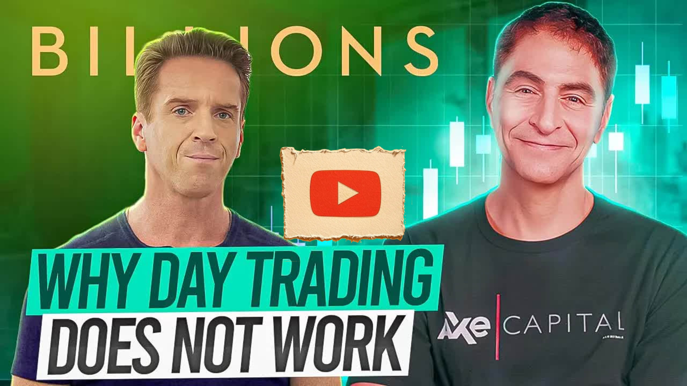

Great Pods
Why Day Trading Does Not Work: Wall Street Pro Reacts to Billions Season 2, Episode 5
Key Points
Day trading does not work in the long run - there are no successful long-term day traders because stocks move randomly in the short term
Successful hedge funds make money through 1-3 year positions with thorough investment research, not day trading
Warren Buffett's approach: invest with a 10+ year view and don't care about short-term market closures
The S&P 500 was a five-bagger from 2012-2024 for long-term holders
Investing $23,000 annually in S&P 500 for 20 years results in over $1 million
Professional hedge funds have no information advantage - they use the same public sources (annual reports, earnings calls, press releases)
Investment research should include 100 steps covering qualitative, quantitative, and financial modeling analysis
Successful investors value companies based on earnings 3-5-10 years out, not current year multiples
Management team analysis is crucial - "ideas are commodities but execution is not"
Never buy stocks without doing your own thorough research first
Window dressing involves buying quality stocks at quarter-end to improve portfolio appearance for disclosures
Hedge fund portfolio managers get bonuses around 10% of firm profits, incentivizing conservative year-end positioning
Central banks cut interest rates by increasing money supply through buying government bonds
Currency devaluation makes a country's exports cheaper and attracts international investment
George Soros made $1 billion shorting the British pound in 1992 by coordinating with other large hedge funds
Idea dinners are common on Wall Street where hedge funds promote their holdings to other investors
Proper risk management means never putting more than 5% in any single stock
Government bond sales are essential for funding national defense and maintaining economic sovereignty
Full Transcript
Language: en nobody leaves here until you hand me an idea that I can Shock the World with in a few days time you are all selfish mother let's talk about Finance lessons from the fifth episode of billion season 2 based on my work experience at Goldman Sachs New York City and based on my work experience at the top hedge funds in the world now please like comment and subscribe and stick around because at the end of this video I'm going to grade the episode for Wall Street really ISM with a buy hold or sell rating now in this video we're going to talk about two different topics topic one is why day trading does not work and during topic one we will discuss exactly how the most successful hedge funds make money by thinking longer term and we'll also talk about their research process which you can easily learn and then in topic two we'll discuss how governments change interest rates now in topic two we will also discuss shorting currencies because ax does this this episode and we'll discuss how George Soros made $1 billion in one day when he shorted the British pound and this is a special situation because in almost all occasions short-term trading does not work let's start with topic one which is day trading in this episode axe's Investments are down for the first time ever in a given quarter and he's got three days left in the quarter to make money and so what he does is he puts tremendous pressure on his portfolio managers and analysts to make money and only 3 days but can they do it what do you have for me I'm peeling back the skin on territory petroleum they're sitting on good numbers if they come out bump Sev too late when the numbers come out we're dead man walking now that energy sector portfolio manager thinks that earnings will be great when the company reports but it won't be until next quarter so what other ideas do his employees have Ferguson rip our liquid Longs I've got a few positions on my book that are ready for juicing and we could add some classy names to the investor window dressing now that analyst said to sell illiquid stocks that have lost him money and replace them with high quality stocks before the end of the quarter why did he say that because if you manage over $100 million in assets like axe Capital does then by law you have to disclose to the market what you own every single quarter and window dressing means let's buy a bunch of great stocks at the end of the quarter so investors see the amazing stocks that we own and not the losers that c cost us money but this does not solve axe's problem of showing a negative return in the quarter and axe actually has issues trying to get his employees to day trade to make money really really fast and as a result he explodes with this comment you are all playing it safe for the quarter so you have a shot of personally being up on the year you are all selfish accurate now at hedge funds at least close to year end portfolio managers like to lock in their profit profit so they get a bonus which is often 10% of what The Firm made that year what is not accurate about this is that axe is trying to force his employees to make money in three days by day trading and later on in this video you're watching right now I'll teach you how the best hedge funds invest but first and I say this with love my heart please please please please please do not day trade because it will all end badly and there's a reason we cannot name a single day trader that's been successful primarily focused on day trading in the long run because they don't exist why is that because in the short run stocks go up or down for really random reasons outside of our control for example comments from political leaders or geopolitical issues like war or anything that can make Commodities like oil go up a lot or down a lot or even economic data points like unemployment or inflation statistics can make stocks go up or down a lot and it's really hard to forecast the short-term events now each month has 20 week days meaning 20 days that the major markets are open and it's absolutely impossible it's impossible to make money every month now please read this book by Talib called Fooled by Randomness for more details now the worst thing that can ever happen to a new day trader is they make money on their first trade why is that because it's the exact same thing as going to a casino the first time and making money on your first bet and people think it's repeatable but the casino or the market always wins in the long run and not the Gambler or the day trader so please don't be seduced by day trading and as Warren Buffett said the longer the view the wiser the intention in fact when Warren Buffett invests in a stock he tells himself that he doesn't care if the stock market is closed for 10 years after he buys a stock Buffett has owned Coca-Cola for decades and he said if you bought COC on the first day meaning during the IPO you would be down 50% one year later but if you didn't sell a share then of course you would have made a killing uh in the long run separately look at this chart here from 2012 to 2024 it's a basically a five Baggar if you just held on to it now can you guess what investment this chart represents and imagine how much money you would lose if you try to day trade this chart now do you know what investment this is this is the S&P 500 and we'll talk about investing in individual stocks in a second but when you invest tell yourself I don't know the path but I know the destination and you'll sleep better at night and you won't pay as much in taxes as you pay less in capital gains tax if you hold something for more than a year before booking profits and in a second I'll show you how to do research on investments so you don't have to day trade and so you don't have to rely on only investing in ETF but first if all you did was you put your 401K retirement annual Savings of about $23,000 in the S&P 500 for every year for 20 years then in 20 years you would have over a million do and if you're supposed to it too then You' had over $2 million and you wouldn't have a heart attack every time the market sold off for random reasons that you can't control so by being longer term focused your wealth and your health will benefit now if a hedge fund makes money every month then they are cooking the books and potentially breaking the law with Insider information and the best performing hedge funds are actually not day Traders they put on one to threeyear positions with a very wellth thought out investment thesis that thoroughly analyzes the fundamentals of a company in the very long run and the grandfather of hedge funds is Julian Robertson who founded hedge fund tiger in the 1980s and he was very long-term focused and many of his many of his employees started their own longer term Focus hedge funds called tiger cubs per these examples you see right here and it's a misconception that successful hedge funds are day traders in the in the long run most of the money that successful hedge funds make are based on a handful of ideas each year that they do a ton of research on and these companies that they invest in can double or triple in a year so how do they do this research well I'm going to to show you and by law successful hedge funds have no information or knowledge Edge or advantage over you and so I created this 100 step investment idea spreadsheet that analyzes every aspect of a company based on your research and this is based on my Decades of investing experience now in this spreadsheet I ask you 730 questions based on your research that you type into the spreadsheet to help you with a long-term stock investment idea and after completing the spreadsheet you will have a one pager automatically created for you ignore my dummy data here but this one pager analyzes the company for you and helps you come up with a Target price now what's also included based on your research is a massive dashboard that visualizes your analysis and a 100 plus page investment research report as well now there's 100 steps here in three categories that professional investors analyze including quality ative research topics at the top here quantitative research topics in the middle and financial modelbased research at the bottom and the professional hedge funds have no Edge on you because we all have access to the exact same research sources as they do meaning annual reports corly reports press releases online webcasts we can attend for free investor relations content Etc now each tab on this spreadsheet has a long YouTube video in the 20th row you click on it there explaining in lots of detail how professional hedge funds complete each of the 100 steps and qualitative research here includes analyzing the management team catalysts drivers barriers to entry and much more quick side note I always start with analyzing the management team because ideas are Commodities but execution is not and I usually hate investing in companies where the founder is no longer running the company now top hedge funds also analyze quantitative data like the total addressable market market growth market share Etc and if you don't analyze the data then you only have an opinion and not a wellth thought out uh investment idea then all this stuff feeds into the hedge funds most important part of their investment research which is financial research and building and forecasting your financial model in order to come up with a Target price in the long run on the company that you're investing in now do you ever look at a stock and think I love this company but it's expensive at 100 times this year or next year's earnings well the best hedge funds and investors do not value companies based on their earnings estimates this year or next year rather they value companies based on their earnings per share estimates in 3 5 or 10 years from today and this is why many stocks look expensive today to most investors now years ago I invested in Amazon as a long position at a hedge fund I worked at and my colleagues would say to me Chris you're cray cray to invest in Amazon because it trades over 100 times earnings and this is a Widowmaker for you and I said no it trades at only four times my earnings estimates in 5 years meaning a PE of four so we need to really do our own research and forecast financial statements many years into the future in order to understand the true earnings power of companies that we want to invest in and this is the secret to how many successful hedge funds make money they're not day Traders they're long-term focused and my clients and students use this and many other Frameworks I created for them so always do your own research and don't ever buy a stock after you watch a video of someone pitching a stock to you why because if you don't do your own then you might buy poor Quality Companies or even worse you might sell the stock if it goes down and as Warren Buffett said the New York Stock Exchange is the only store in the world where consumer sells stuff when it goes on sale now instead of being day Traders successful investors that work at the top hedge funds spend a lot of time building their financial models which you can easily do as well instead of wasting time on looking at technical analysis now don't only look at technicals for your investment research spend way more time forecasting your financial statements which you can easily learn to do which is what I teach so how can you learn accounting and finance from scratch and also get access to this spreadsheet well what you can do is you can check out my book that McGraw Hill published called Finance Essentials for managers which gives you all the tools you need to succeed as a non-financial professional and the link is in the description of this video to this book and a link to download this spreadsheet and many other spreadsheets and resources are included uh in this book of mine and I promise you that you will make much more money in the long run if you do your own thorough research instead of day trend now you might be thinking Chris how do I even come up with an idea of what stock to invest it well it all begins with an investment theme for example let's go to a free website together called ETF db.com meaning ETF database where you can analyze thousands of ETFs and let's scroll down right here and let's pick a random investment theme like lithium let's say you're bullish on lithium well we can click here on lithium for example and then we could select a a lithium ETF here and we can look at the Holdings of this lithium ETF and we can start to do Bottoms Up research on one of these companies here now the way you know that you have a good investment idea is if you complete the entire 100 steps of the investment right up and this acts as a safety net so that we don't get seduced into dayri let's get back to season 2 episode 5 of billions how much is ax Capital down this quarter if the quarter ended today we'd be underwater like Crimson hide Sanic has pulled us down to - 2.3% so a Down 2 .3% return on a quarter is nothing especially since this is ax capital's first down quarter ever nobody makes money every month or every quarter and if they do then statistically they are likely doing something unethical now if you chase performance into month or quarter end then it will more often than not hurt you more in the long run that much I promise you now what some hedge funds do when they have a down quarter is they take their private Venture Capital Investments if they own them and then they have their back office mark up the value of that asset in order to hide the losses in their stock market portfolio and this could be unethical if not done correctly of course for example let's say axe Capital had a $500 million investment in a private AI Venture back company that they own and the value of the private investment went up a lot then what they could do is they could revalue or mark up that investment from say a $500 million investment to 1 billion uh investment which would more than offset the 2.3% loss on the quarter they do this all the time now what other hedge funds do is if they're ever down say 4.9% in a month and if they're worried about Investors getting really upset uh in a month where they're down way more than 5% then what they can do is they can take a knee meaning they use options or adjust their stock portfolio so they don't lose more than 4.9% of month now the best hedge funds don't usually have to consider doing this though because they have superb risk management metrics meaning they will never be too long or Too Short the market and they won't have more than 5% in anyone's stock for example and very sophisticated hedge funds use options to hedge their positions to ensure that they don't have a massive down month which I talked about in this video right here and the link is in the description to this video now there are no ethical shortcuts and axe's most unethical portfolio manager has this to say in front of Axe and axe's compliance director who ensures that no Insider information is used when investing where see it we need a quick fix in a non-quick fix Market yeah I have an idea but apparently I can't give it to you now when you're driving somewhere and you're running late you might take a shortcut but then you might get lost and so never take a shortcut you've never taken before when you're in a hurry now axe's compliance director then tells axe that it's okay to be down because you're human so to get around this axe does this you were wrong I'm not human I am a machine I'm a Terminator he then fired his compliance director because he does not know how to make money in the short run without break in the law now axe could not get his Equity meaning stock market analyst to give him an idea that can make money in only 3 days before the quarter ends so he turns through another source to give axe Insider information on currency trading and so topic two of two is how do governments change interest rates the Nigerian government is going to devalue currency you know that the Central Bank Governor told me now the Central Bank governor in Nigeria is the equivalent of the Federal Reserve in the United States now if a stock or a currency goes down investors can make money betting against it by shorting it so in this case the Central Bank of Nigeria is going to make the value of the Nigerian naira go down versus the US dollar why perhaps to get International investors to want to invest more in Nigeria if a country's currency goes down then all the stuff that that country sells becomes cheaper which attracts International investors especially Chinese companies that want to purchase natural resources and when central banks or the Federal Reserve wants their own currency to go down in value what they do is they make it go down by cutting interest rates so how does the central bank or the fellow Reserve cut interest rates in order to make the value of their currency go down well they do so by increasing the supply of money out there and we know that when the supply of anything like baseball or Pokémon cards goes up then the price usually goes down and vice versa so let me explain how this whole process works with a couple of of props okay this is kind of tight there are two types of medicine that governments use to fix the economy okay one is called fiscal policy which means spending money on stuff like highways to employ people uh and help the economy and the other one is called monetary policy which is the policy of money now in this monetary policy medicine bag we have a tool that can cut interest rates see what we have in here aha here it is here okay so we have a tool that can cut rates how well let's assume that I the Federal Reserve in the United States and you are all banks and investors if I want to cut interest rates to jumpstart the economy I can increase the money supply out there this is fake money now if the supply of money goes up then the price goes down and the price means interest rate so how do I do this well Banks and investors own US government bonds Let's Pretend This is a US Government Bond that you own okay so remember I'm the government I'm the Federal Reserve what I'm going to do is I'm going to give you all money so I can buy this Bond back from all of you okay so here's your money and I bought this Bond back now because there's more money out there okay in the marketplace the supply money goes up then that means that the price of money goes down meaning interest rates go down now if that's complicated think about it this way let's pretend that I'm Nintendo okay and I made three of these products here okay three Marios and the price of these three Marios is really really high because it's a collector's item now let's say that Nintendo makes 8 million more of these then the price of Mario will go down because the supply increased so if I'm the Federal Reserve and I want to increase interest rates then I need to decrease the amount of money out there okay so what I can do is I can sell bonds to you okay so I give this to you and then you give me your money okay I sold this to you now there's less money out there in circulation now the most powerful weapon any country has is the ability to change interest rates why is that well let's go back in time together okay it's 1944 and let me get my hat here okay it's 1944 and I'm Canadian I was born in Canada it's 1944 and I'm the Bank of Canada I want to find a way to raise money so I can do my part in building tanks and stuff to help fight the bad people in World War II how can I do this well as you can see here what I can do is I can sell you bonds I sell you bonds okay and you give me your money then I use the money that you gave me to help ensure that freedom prevails now imagine if the Bank of Canada can't do this anymore well freedom and capitalism would not exist now as a quick side note now you probably understand why some left-leaning countries make cryptocurrencies illegal it's because without the flexibility of selling bonds governments would fail and so the biggest threat to National Security for some left leaning countries is actually cryptocurrencies now Bobby Axel Rob realizes that if he wants to manipulate the value of the Nigerian naira by transacting in size to change the value of the naira versus the dollar he can't do it himself because he does not have enough money so instead he does this Nigeria is going to devalue its currency get the hell out of here how could you know that because we're going to make it happen so that's accurate axe actually set up what's called an idea dinner with other large hedge funds to help him with this trade and idea dinners are very common on Wall Street so that hedge funds can talk their books meaning promote their own Holdings to other investors now there are precedents for this idea dinner in this episode as well because when George Soros forced the bank of England in 1992 to devalue the pound and made a billion dollars in one day he partnered with other large hedge funds like what Bobby is trying to do right here now you're probably thinking Chris wait a second you said earlier that day trading does not work well this is a special situation that involved billions of coordinated dollars and multiple Financial Services firms partnering together with each other and even then the risk are insanely High currency plays are all about timing you get in too late there's nothing there but you get in too early they raise interest rates and bed you out of your position agreed being early is the same as being wrong Soros then did the exact same thing by partnering with other hedge funds in 1997 to short the tie bot and George Soros made another billion dollars in 2013 and 2014 by shorting the Yen now how much money does Axe want to invest in the currency short position the threshold is five billion I'm in it for two that leaves one each for you three so which is the more powerful driver boning me or your own self-interest not accurate there's no way that axe would invest well over 20% of his portfolio in one trade I mean that's really poor risk management especially since he's trying to throw a hail Mar pass just recoup a 2.3% loss let's talk about grading this episode for Wall Street realism with a buy holder cell rating the episode did an awesome job of showing how hedge fund employees try to lock in profits by being very conservative with investing at the end of a quarter so they can lock in their bonus and the episode also did a superb job of showing how an incredibly unethical hedge fund might try to chase performance with Insider information and current manipulation in order to profit however there is no way that a large hedge fund would put on a 20% risky position in a currency for the sole reason of offsetting a manageable 2.3% quarterly loss as a result I'm going to give this episode a hold rating please subscribe and I will see you soon in our next reaction video when we react to season 2 episode 6 thank you for
← All Summaries
Watch on YouTube